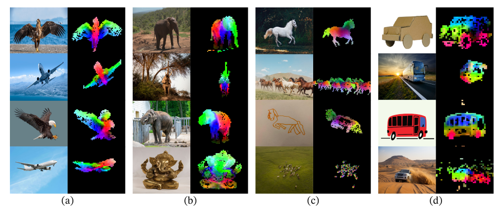
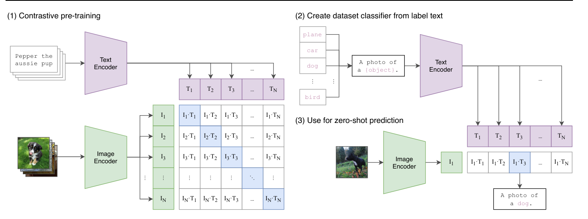

Apprentissage contrastif non supervisé#
De nos jours, une grande partie de la recherche en deep learning se concentre sur l’apprentissage non supervisé. Comme nous l’avons vu dans le cours 4 sur les autoencodeurs, l’apprentissage non supervisé consiste à entraîner un modèle sans données étiquetées. L’avantage principal de cette approche est qu’elle réduit considérablement les coûts et les efforts nécessaires à la préparation des données. C’est ce type d’apprentissage qui a propulsé les NLP sur le devant de la scène et qui permet la génération d’images impressionnantes avec Dall-E ou de vidéos avec SORA.
Nous avons vu dans le cours 5 sur les NLP comment réaliser un apprentissage non supervisé sur du texte (il suffit de récupérer n’importe quel texte et d’entraîner le modèle à prédire le prochain caractère). Pour le traitement d’images, nous n’avons pas vraiment abordé cette question, sauf une brève mention de CLIP dans le cours 7 sur les transformers.
Alternatives à l’apprentissage contrastif pour l’apprentissage non supervisé#
Il est important de noter que l’apprentissage contrastif n’est pas la seule méthode pour réaliser un apprentissage non supervisé sur des images.
Autoencodeurs#
Nous avons déjà présenté les autoencodeurs dans le cours 4, qui permettent d’apprendre des représentations d’images pertinentes. L’article Masked Autoencoders Are Scalable Vision Learners démontre que les masked autoencodeurs peuvent servir à apprendre des représentations d’images très utiles.

Réseaux antagonistes génératifs (GAN)#
Dans ce cours, nous n’avons pas encore parlé des GAN. Rapidement, il s’agit de réseaux qui s’entraînent de manière antagoniste : un générateur crée de fausses images, tandis qu’un discriminateur doit faire la différence entre une image réelle et une image générée. En s’entraînant ensemble, on peut obtenir un générateur capable de produire des images très réalistes sans avoir besoin d’un jeu de données étiqueté. Il y a quelques années, c’était la méthode la plus utilisée pour la génération d’images (depuis, on utilise plutôt les modèles de diffusion, qui sont également non supervisés).

Prédiction de transformation#
Une autre approche consiste à prédire une transformation appliquée à l’image. Par exemple, on peut faire tourner l’image (RotNet) et entraîner le modèle à prédire cette rotation, ou mélanger l’image comme un puzzle et entraîner le modèle à la reconstruire (JigSaw).
Distillation auto-supervisée#
Plus récemment, des méthodes basées sur la distillation des connaissances utilisent à nouveau des transformations d’images, comme dans l’apprentissage contrastif, mais sans utiliser de paires négatives. Pour éviter que le modèle ne collapse, diverses techniques sont utilisées. Pour en savoir plus, vous pouvez lire l’article DINO. Note : Le concept de distillation des connaissances sera abordé dans le cours suivant.

Note : La liste des méthodes non supervisées n’est pas exhaustive, mais vous avez maintenant une bonne idée des méthodes existantes. Par ailleurs, les GAN et les modèles de diffusion sont non supervisés, mais ils ne sont pas utilisés pour créer des modèles de base pouvant être fine-tunés sur des tâches plus spécifiques.
Comment adapter l’apprentissage contrastif à l’apprentissage non supervisé ?#
Modèle CLIP#
Nous avons déjà vu le modèle CLIP dans le cours 7, qui est entraîné de manière contrastive au sein du batch. Cette approche diffère de ce que nous avons vu précédemment : un vision transformer prend en entrée les images du batch, tandis qu’un text transformer prend en entrée les descriptions de chaque image. Le modèle est ensuite entraîné à associer correctement les images et les descriptions de manière contrastive, en minimisant la distance entre les embeddings de la même paire et en maximisant celle des paires différentes.
CLIP est un modèle utilisant une fonction de perte contrastive, mais il n’est pas vraiment non supervisé. Il repose sur des paires d’images/textes qui servent de labels pour l’entraînement.

Apprentissage non supervisé pour les images#
En apprentissage non supervisé, nous cherchons à nous passer de données étiquetées. La méthode SimCLR propose une technique pour utiliser l’apprentissage contrastif dans ce contexte. L’idée est de traiter un batch de données où chaque élément est une paire d’images. La particularité de cette paire est qu’il s’agit de la même image à laquelle on a appliqué une transformation (voir cours bonus sur l’augmentation de données). Chaque image est ensuite passée dans un réseau identique (siamois), et le modèle est entraîné à minimiser la distance entre les représentations des images de la même paire et à maximiser celle des images de paires différentes.
Dans cette méthode, l’augmentation de données est cruciale, et il est important de ne pas négliger les différentes transformations possibles. Pour faire l’analogie avec les paires positives et négatives :
Paires positives : Les deux images transformées \(x_i\) et \(x_j\) provenant de la même image \(x\).
Paires négatives : Deux images transformées \(x_i\) et \(x'_j\) provenant d’images différentes \(x\) et \(x'\). Grâce à cette méthode, le modèle peut apprendre des représentations pertinentes des images sans avoir besoin de labels. Il peut ainsi distinguer les images représentant des objets différents, sans pour autant savoir ce que ces objets représentent.
Avantages de cette approche#
On peut se demander l’intérêt d’entraîner un tel modèle. À quoi peut-il bien servir une fois entraîné ? Pour répondre à cette question, on peut faire une analogie avec les modèles de langage. Ces modèles sont d’abord pré-entraînés sur une grande partie d’Internet, puis on les fine-tune sur une tâche précise (comme un chatbot pour ChatGPT, par exemple). Pour les images, c’est à peu près la même chose : les modèles entraînés de manière contrastive sur des milliards d’images peuvent servir de modèles génériques que l’on pourra ensuite fine-tune sur des tâches plus spécifiques, comme la classification. Note : Le fine-tuning et le transfer learning sont abordés en détail dans le cours suivant. En gros, ce sont des techniques pour réutiliser un modèle déjà entraîné sur des tâches différentes.